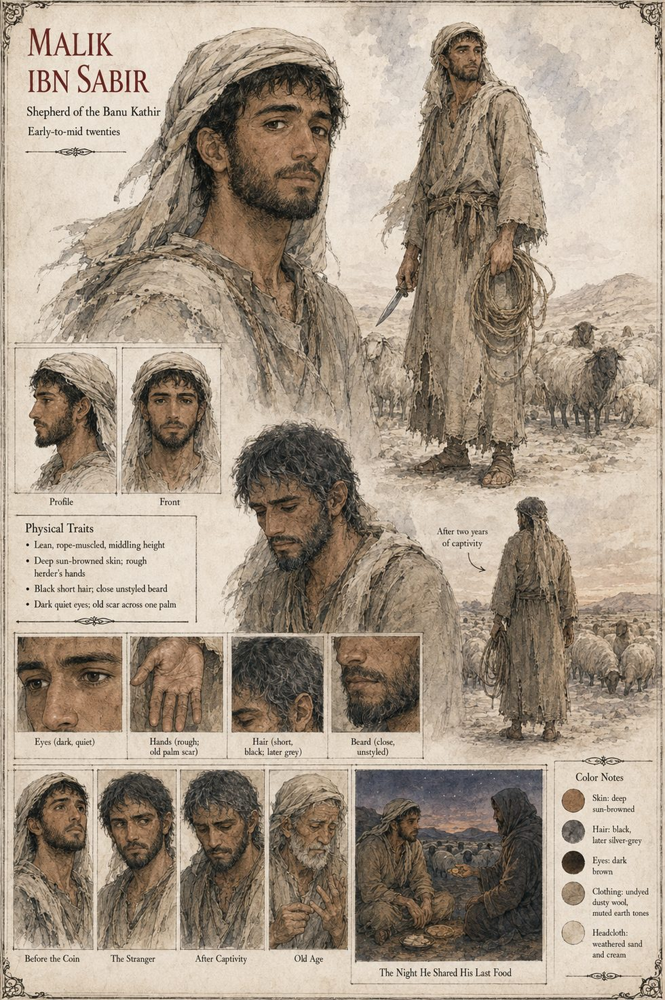

Malik ibn Sabir
Shepherd of the Banu Kathir · four goats, a threadbare tent and nothing else · first owner of the dinar · held two years for a murder no one asked him about · early-to-mid twenties by his sheet
A shepherd of the Banu Kathir who, on the night the story opens, owns four goats, a threadbare tent his father died in, and nothing else that could be weighed, counted or claimed by a creditor. His mother died bringing him into the world and his father nine years later, of a fever no physician came far enough into the waste to treat; he was raised, the manuscript says, by the flock itself, and fills the silence with verse, muttered to the goats at dusk in the cadence his father used for counting debts, so that even his poetry keeps a kind of ledger. A stranger, Observer 1140, comes down from the northern scarp after dark carrying nothing and asking for nothing, and Malik, who has planned to eat nothing again until the goats are sold at the spring market, splits what he has and gives the stranger the larger half without appearing to notice. Near dawn the stranger presses a dinar into his palm and tells him he will not be able to keep it or to lose it.
He keeps it eleven days before hunger sends him to the oasis town to settle a grain advance with Hammad, and the coin is back in the middle of his palm the next morning. After three returns he cuts a small notch into its rim with his herding-knife before spending it again, and the notch comes back, in the same place, every time. He gives the coin to Amina as part of her mahr, with four goats (by then six) and a length of good rope, before both families and the keeper of the nearest well, and for a season or two they are simply happy: he recites his ledger-cadenced verses to her instead of to the goats. When she leaves him, in precise legal words, he asks only Was any part of it real? and she answers, All of it, until it was not. He keeps a composure the clan admires through the packing of her cedar chest and her uncles' over-polite negotiations, and breaks nine days later, alone, over a lamb born early and dead within the hour, making a sound he would refuse for the rest of his life to describe.
The news of her murder reaches him three days late, from a trader who mentions it like weather. He says nothing and asks nothing, and walks eleven miles through open desert at midday, without water, to the edge of the Banu Harith grazing grounds to wait to be let in to grieve her. They do not let him. Men his own age, who wrestled beside him at festival gatherings a decade before, seize him, bind him with a rope meant for goats and leave him sitting in the worst heat of the day while Sulayman decides what justice requires. He is held two years, alive, unjudged and increasingly unimportant to a war fought partly in his name, and in all that time no one asks him where he was the night she died. He does not scheme or smuggle word out. He teaches himself to recite silently every verse he ever muttered to the flock, adding a line for every rumor of the dead that reaches even a captive's ears, until the poem no one will hear is longer than anything a trained reciter would dare perform at a festival fire. When a cousin bribes a guard for ten minutes and offers a night raid, his answer is one word, no, the only word of the captivity anyone thought worth remembering.
Released on the garrison captain's order, eleven days after Qasim's sworn account reaches him, without apology or compensation, he walks out older, quieter and permanently missing whatever part of a person allows them to trust a crowd's certainty again. He is, the manuscript says, the one person the coin never had time to test: he had given it away before the question it asked everyone else who held it longer could reach him. He spends the rest of his life repaying the kinsmen who kept his grazing grounds alive, one lambing season at a time, and never mentions the coin to anyone who has not already heard the story from someone else. He marries once more, quietly, a widow from a clan the war never touched, teaches three children to speak in his father's debt-counting cadence without telling them why, and lives to be an old man whom his grandchildren know as gentle and unhurried, with a habit of counting things twice. When Qasim finds him years later, himself old, under the same cover story, and gives him a dead thief's name and the four sentences of a confession that freed him, but nothing about the coin, Malik thanks him with more grace than the news deserves after so many years and asks him to stay for the evening meal.
The sheet draws him lean and rope-muscled, of middling height, with deep sun-browned skin, rough herder's hands with an old scar across one palm, short black hair that goes grey and, in an old-age panel, white, a close unstyled beard and dark quiet eyes, in undyed dusty wool and a weathered sand-and-cream headcloth, with a herding-knife and a coil of rope. The manuscript gives him no age, scar or colouring; those and the age band are the sheet's. The sheet also puts a large flock of sheep behind him, where the manuscript gives him four goats, later six.